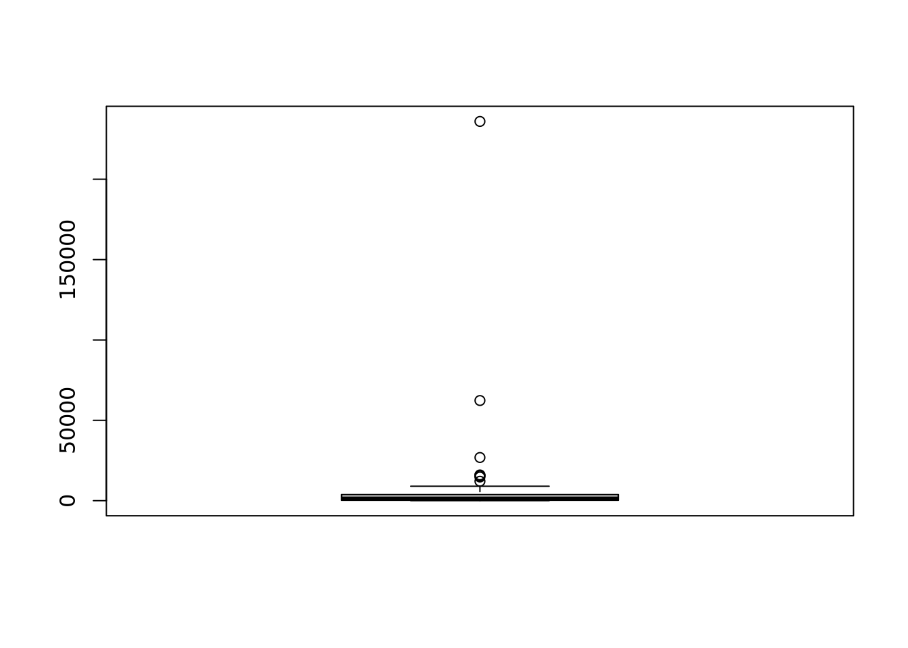
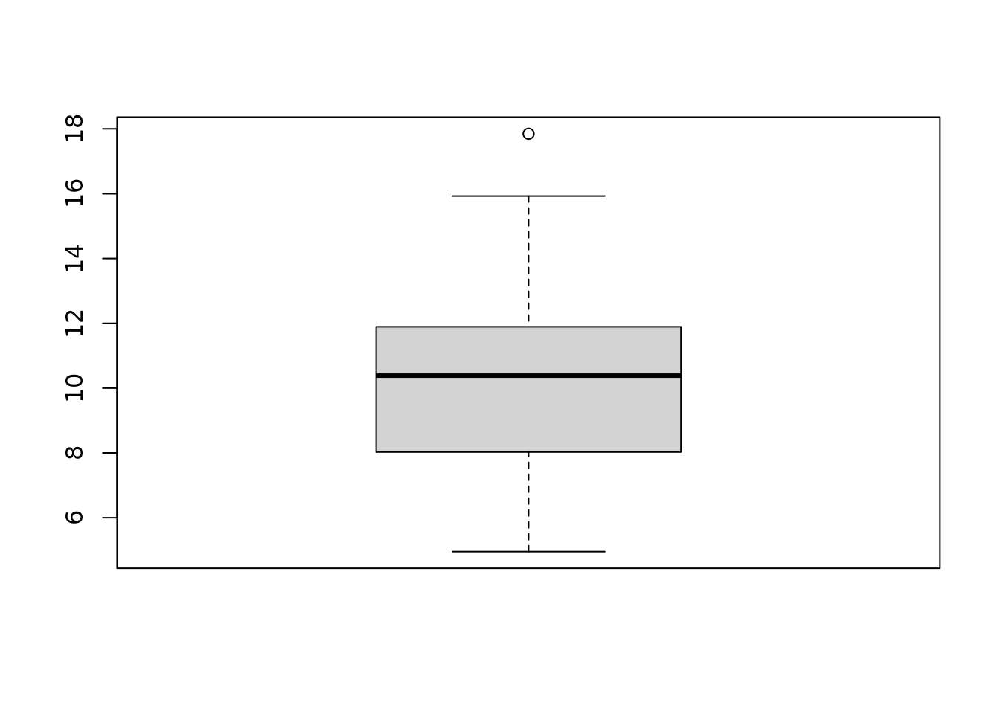
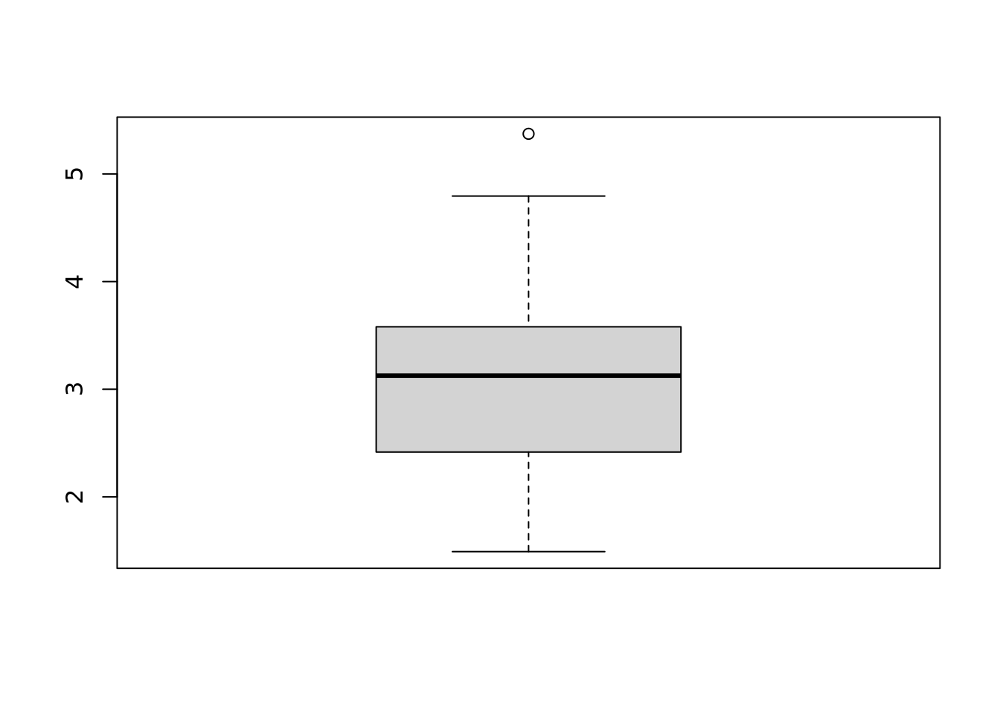
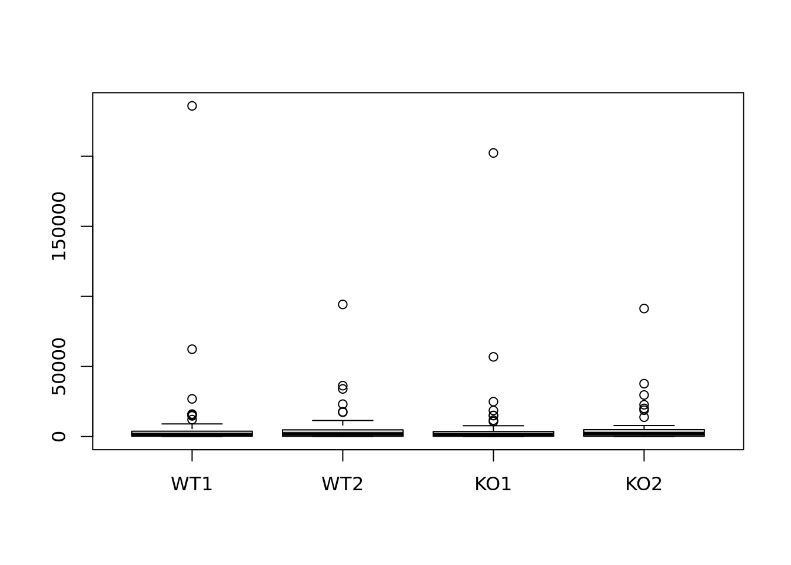
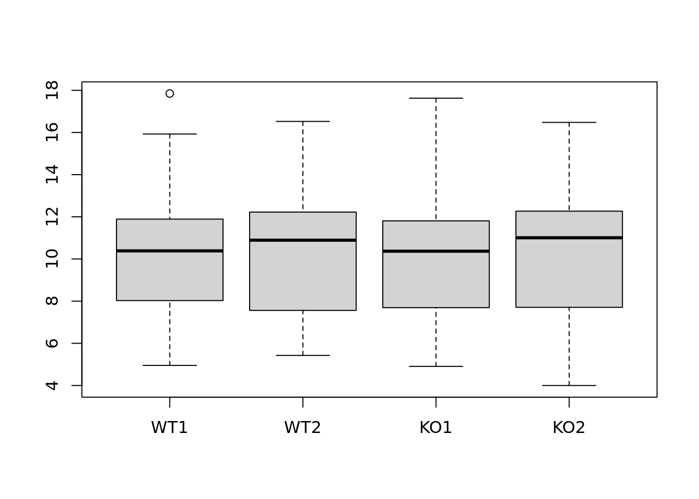
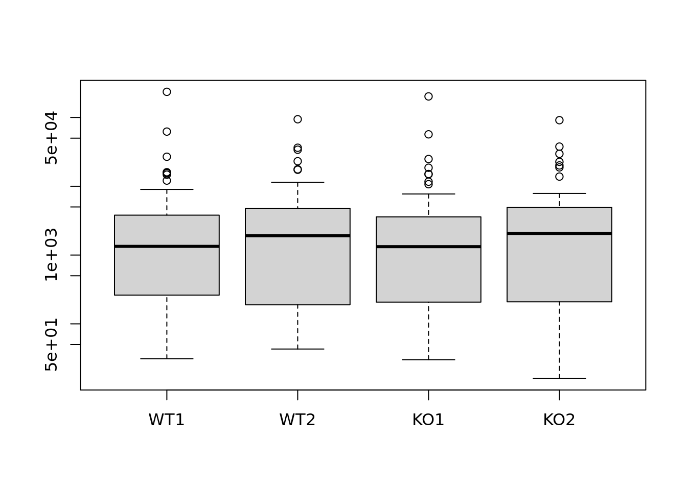
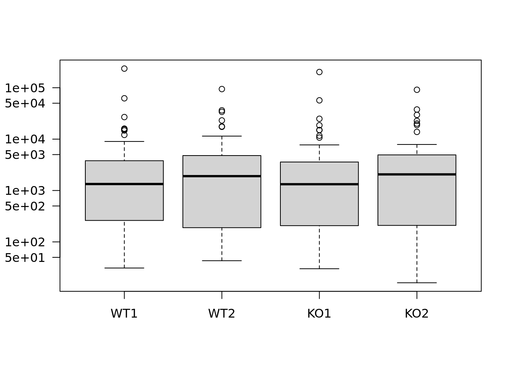
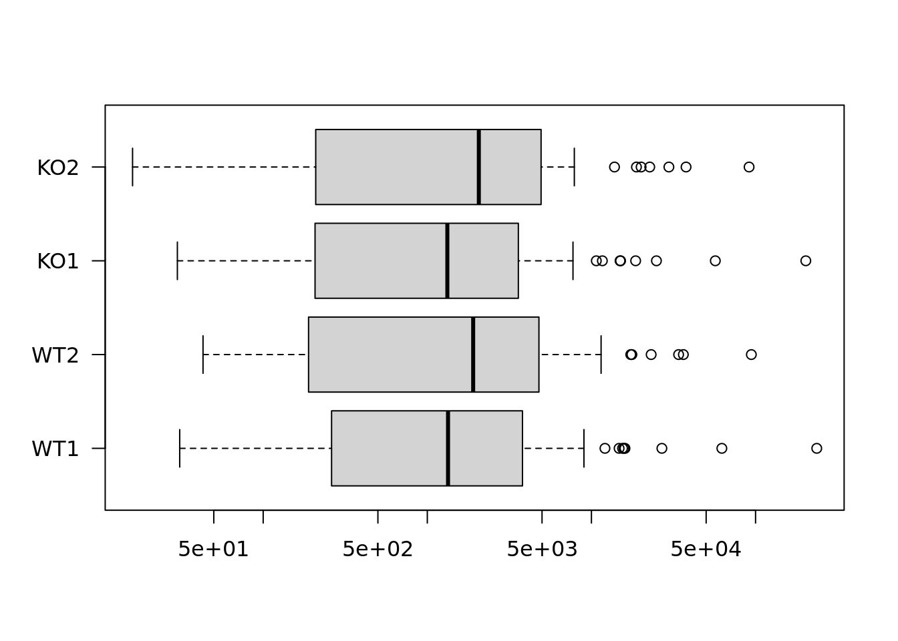

Boite à moustache des valeurs d’expression pour l’échantillon WT1
boxplot(exprs$WT1)
Boite à moustache du logarithme de ces valeurs
boxplot(log(exprs$WT1))boxplot(log2(exprs$WT1))
boxplot(log10(exprs$WT1))
Boite à moustache des valeurs d’expression pour les 4 échantillons
boxplot(exprs)## ignorer la première colonne
boxplot(exprs[,-1]) 
boxplot(log2(exprs[,-1]))
boxplot(exprs[,-1], log = "y")
## afficher les étiquettes des axes horizontalement
boxplot(exprs[,-1], log = "y", las = 1) 
## Encore plus beau
boxplot(exprs[,-1], log = "x", las = 1, horizontal = TRUE) 